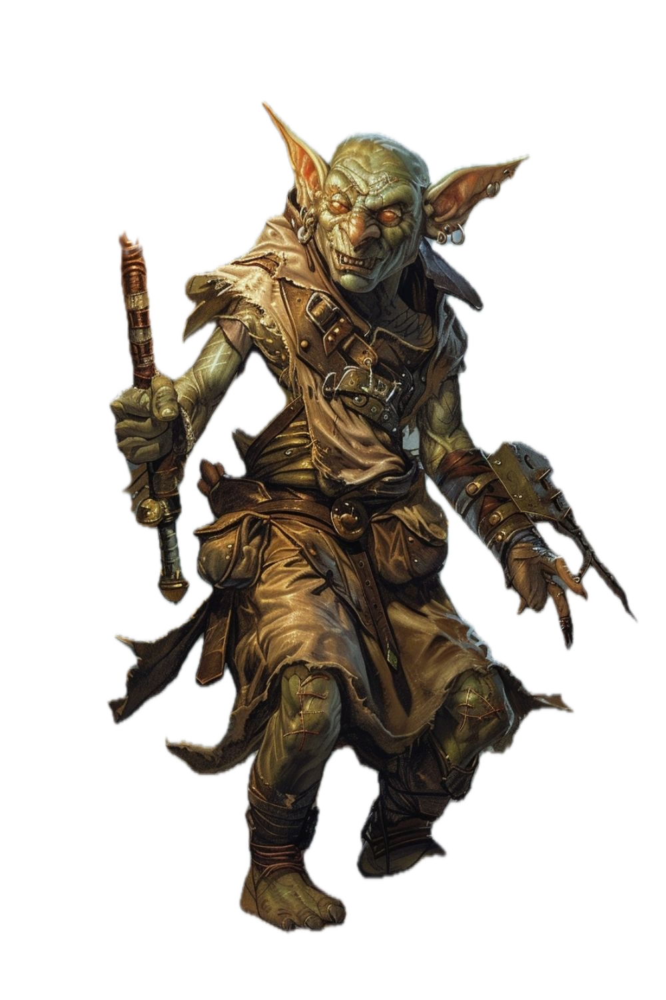

GOBLINS
“GOBLINS: HIJOS DE LA SOMBRA ANTIGUA”
En los rincones olvidados del mundo, donde la luz teme adentrarse y el viento susurra nombres prohibidos, existen criaturas nacidas del caos primigenio. Son los goblins: astutos, indomables, moldeados por la oscuridad y la ira de una tierra que nunca perdonó a nadie.
Sus ojos brillan como brasas hambrientas. Sus pasos, aunque pequeños, cargan el eco de antiguas guerras. En cada guarida, en cada sombra, guardan secretos que las demás razas jamás se atreverían a nombrar.
No son monstruos…
No del todo.
Son supervivientes.
Y esta es su historia.
